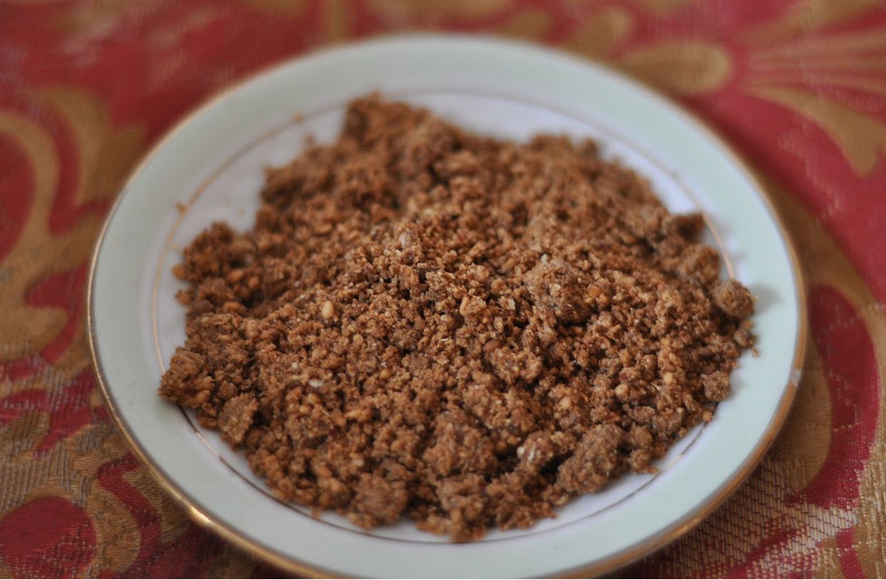

Making duqqa
How to make duqqa, an Egyptian condiment consisting of a mixture of herbs, nuts (usually hazelnut), and spices.
Duqqa or dukkah is an Egyptian blend of nuts, seeds, and spices and enjoyed as a starter or snack to dip with bread or fresh veggies.
Ensure you have the following ingredients to hand before you begin.
- 1 cup hazelnuts
- 2 tablespoons hazelnuts
- 1/3 cup sesame seeds
- 2 tablespoons cumin seeds
- 1 tablespoon coriander seeds
- 1/4 cup dried mint leaves
- 1 tablespoon salt
- 1 tablespoon za'atar 
- Preheat oven to 325 degrees F (165 degrees C.
- Spread 1 cup plus 2 tablespoons hazelnuts out on a baking sheet. Toast in the preheated oven until lightly browned and fragrant, about 10 minutes. Let cool.
- Combine sesame seeds, cumin seeds, and coriander seeds in a pan over medium heat and toast until fragrant, 2 to 3 minutes. Remove from heat and let cool.
- Combine toasted hazelnuts, toasted sesame seed mixture, dried mint, salt, and za'atar in the bowl of a food processor; pulse until evenly ground.